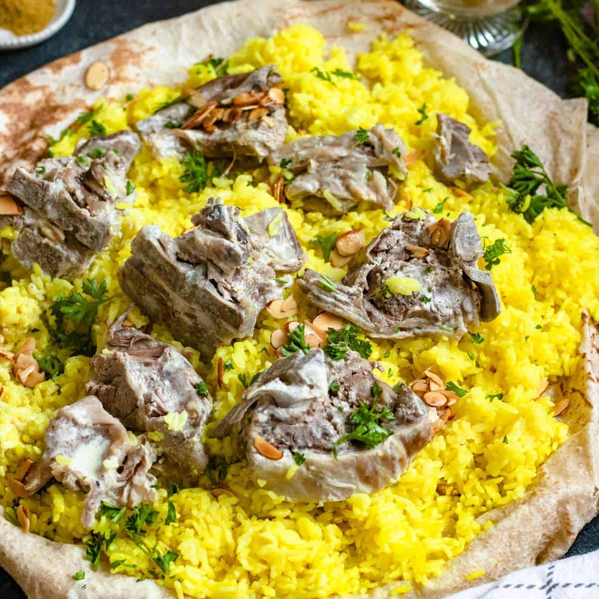

Jordanian Cultural Food
Cook lamb in jameed sauce till tender, then serve over rice topped with almonds and pine nuts.
Eat it with shrak bread and pour extra jameed on top.
Ingredients
- Rice
- 2KG's Lamb Meat
- Dried Yogurt/Jameed
- Onion
- Pine Nuts
- Almonds
- Shrak Bread
- Parsley
Steps
- Cook the lamb: Cook lamb meat and onions in boiling Jameed Yogurt for about 1–1.5 hours
- Cook the rice: Boil 2 cups of rice in 3 cups water until fluffy
- Toast the nuts in butter
- Assemble: Place shrak bread on plate/base, add rice on top of it, then add the lamb, finally pour sauce over with nuts and parsley